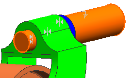
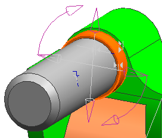

查看现有的装配约束
-
在装配导航器背景中右击并选择列→配置。
-
在装配导航器属性对话框中，移动信息和位置度到列表顶端附近，然后点击确定。
-
在装配导航器中，展开约束节点以查看装配约束。
-
右击对齐 (DES06_CASTER_SHAFT_1, DES06_CASTER_FORK)约束节点并选择信息。
信息窗口有助于您熟悉选定的装配组件，您可以查看组件状态并发现额外的联系。
-
关闭信息窗口。
-
在图形窗口中，右击 des06_caster_fork 并选择显示自由度
 。
。如果您收到一条信息，告诉您必须加载几何体，点击是。
图形窗口会暂时显示拨叉剩余的自由度，状态行指示选定组件还剩余1个转动自由度。

-
刷新图形窗口。
提示
其中一种刷新图形窗口的方法是按F5。
-
显示 des06_caster_shaft_1 的自由度。
通过查看状态行，您可以知道转轴已被完全约束，所以若不抑制现有约束是不能移动的。

-
显示 des06_caster_spacer_1的自由度。
提示
检查装配导航器以确保选择的是您想要的组件。
